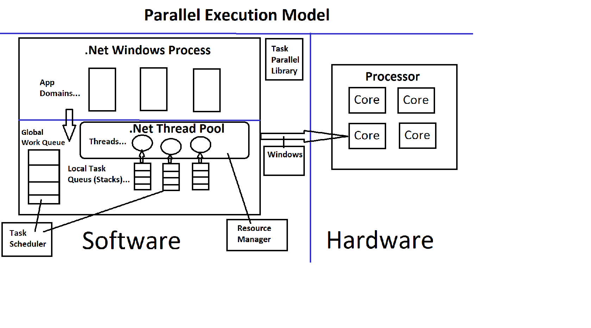

Task Parallelism Framework (TPL) using C#
Posted on August 25, 2016 at 9:00 PM

It refers to one or more independent asynchronous tasks running concurrently i.e. in parallel. You can create as many tasks as you want. All these tasks will be queued to the ThreadPool and managed by the framework. ThreadPool automatically adjust and maintain the number of threads maximizing throughput. It allocates the CPU cores to the tasks balancing load. It assures that all the CPU cores are utilized as much as possible. It keeps you distant from the complexities involved in creating, maintaining and disposing the threads. Task Parallelism provides you the features to support waiting, cancellation, continuation, exception handling, detailed status and many more. You can achieve task parallelism in your application either Implicitly or Explicitly. Note : You can use delegate, anonymous method or lambda expression instead of Action/Func. In this article, I will be using any of them. I may also provide partial code, if possible, to avoid unnecessary code.
Create and run tasks implicitly Tasks are created and maintained implicitly by the framework. You should use this technique when you need to process some tasks which do not return any value and do not need more control over tasks. Parallel.Invoke() – Executes each of the provided tasks/actions, possibly in parallel.
static void Main() { // Retrieve Darwin's "Origin of the Species" from Gutenberg.org. string[] words = CreateWordArray(@"http://www.gutenberg.org/files/2009/2009.txt"); #region ParallelTasks // Perform three tasks in parallel on the source array Parallel.Invoke(() => { Console.WriteLine("Begin first task..."); GetLongestWord(words); }, // close first Action () => { Console.WriteLine("Begin second task..."); GetMostCommonWords(words); }, //close second Action () => { Console.WriteLine("Begin third task..."); GetCountForWord(words, "species"); } //close third Action ); //close parallel.invoke Console.WriteLine("Returned from Parallel.Invoke"); #endregion Console.WriteLine("Press any key to exit"); Console.ReadKey(); }
static void Main() { // Retrieve Darwin's "Origin of the Species" from Gutenberg.org. string[] words = CreateWordArray(@"http://www.gutenberg.org/files/2009/2009.txt"); #region ParallelTasks // Perform three tasks in parallel on the source array Parallel.Invoke(() => { Console.WriteLine("Begin first task..."); GetLongestWord(words); }, // close first Action () => { Console.WriteLine("Begin second task..."); GetMostCommonWords(words); }, //close second Action () => { Console.WriteLine("Begin third task..."); GetCountForWord(words, "species"); } //close third Action ); //close parallel.invoke Console.WriteLine("Returned from Parallel.Invoke"); #endregion Console.WriteLine("Press any key to exit"); Console.ReadKey(); }
static void Main(string[] args) { try { CancellationTokenSource cts = new CancellationTokenSource(); CancellationToken ct = cts.Token; ParallelOptions po = new ParallelOptions { CancellationToken = ct, MaxDegreeOfParallelism = System.Environment.ProcessorCount }; Parallel.Invoke(po, new Action(() => DoWork(1, ct)), new Action(() => DoWork(2, ct)), new Action(() => DoWork(3, ct)), new Action(() => DoWork(4, ct)), new Action(() => DoWork(5, ct)), new Action(() => DoWork(6, ct)), new Action(() => { cts.Cancel(); }), new Action(() => DoWork(7, ct)), new Action(() => DoWork(8, ct)) ); } catch (OperationCanceledException e) { Console.WriteLine(e.Message); } Console.ReadKey(); }
For both of the above methods, you find the words “possibly in parallel”. It means that the framework will check if the tasks can be executed using multiple threads. However if it is not able to get multiple threads, the tasks may be executed using single thread as well.
I hope it helps you understand the basic concepts of Task Parallelism. Please comment your query or suggestion which will help improve the article.
Leave a Comment:
Sanket August 25, 2016 at 9:30 PM
Very good articleBlog Search
Blog Categories
Sanket Shinde
I am Software Developer at Tavisca. I develop applications based on Travel Technology.